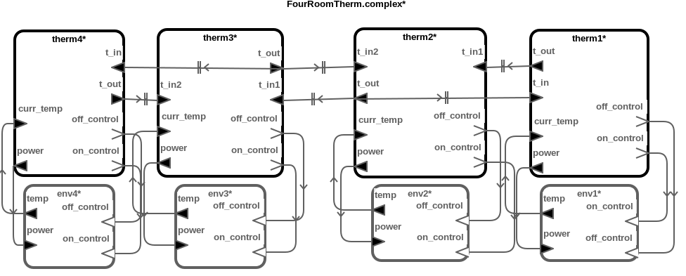

Networked Thermostat Controllers
This benchmark model represents the networked thermostat benchmark. Each thermostat component sends its own temperature to the neighboring thermostat component and sets its hearter power. The goal of these models is for all thermostats to reach the same temperature.
Download
You can download the benchmark model: Thermostat.zip
Top-Level Components
We provide six cases of benchmark model: two, three and four thermostat controller with simple control logic or complex control logic.
Architecture

HybridSynchAADL Model: Controller and Environment
Controller.aadl
thread ThermostatThread
features
on_control: out event port;
off_control: out event port;
power : out data port Base_Types::Float;
t_out : out data port Base_Types::Float;
t_in: in data port Base_Types::Float;
curr_temp : in data port Base_Types::Float;
properties
Dispatch_Protocol => Periodic;
end ThermostatThread;
thread implementation ThermostatThread.simple
annex behavior_specification{**
variables
a : Base_Types::Float;
states
init : initial complete state;
exec : state;
transitions
init -[ on dispatch ]-> exec {
t_out := curr_temp
};
exec -[ true ]-> init {
a := -(curr_temp - t_in);
if(a > 10){
power := 5;
on_control!
}
elsif(a > 3){
power := 3;
on_control!
}
else{
power := 0;
off_control!
}
end if
};
**};
end ThermostatThread.simple;
thread implementation ThermostatThread.complex extends ThermostatThread.simple
annex behavior_specification{**
variables
a : Base_Types::Float;
states
init : initial complete state;
exec : state;
transitions
init -[ on dispatch ]-> exec {
t_out := curr_temp
};
exec -[ curr_temp > 50 ]-> init {
off_control!;
power := 0
};
exec -[ curr_temp < 20 ]-> init {
on_control!;
power := 10
};
exec -[ otherwise ]-> init {
a := -(curr_temp - t_in);
if(a > 10){
power := 5;
on_control!
}
elsif(a > 5){
power := 4;
on_control!
}
elsif(a > 3){
power := 3;
on_control!
}
elsif(a > 0){
power := 2;
on_control!
}
else{
power := 0;
off_control!
}
end if
};
**};
end ThermostatThread.complex;
Environment.aadl
system RoomEnv
features
temp : out data port Base_Types::Float {Data_Model::Initial_Value => ("0");};
power : in data port Base_Types::Float;
on_control: in event port;
off_control : in event port;
properties
Hybrid_SynchAADL::isEnvironment => true;
end RoomEnv;
system implementation RoomEnv.impl
subcomponents
x: data Base_Types::Float;
p: data Base_Types::Float {Data_Model::Initial_Value => ("0");};
connections
C: port x -> temp;
P: port power -> p;
modes
off: initial mode;
on: mode;
off -[on_control]-> on;
off -[off_control]-> off;
on -[on_control]-> on;
on -[off_control]-> off;
properties
Hybrid_SynchAADL::ContinuousDynamics =>
"x(t) = x(0) + (0.01 * p) * t; " in modes (on),
"x(t) = x(0) - (0.001 * t);" in modes (off);
end RoomEnv.impl;
Safety Requirement
We analyze the safety invariant property where temperature of each thermostat is maintained between 20 and 50 degrees up to bound 500 ms.
four-complex-inv-false.pspc
proposition [initial] : abs(env1.x - 48.00) < 0.1 and
abs(env2.x - 42.00) < 0.1 and
abs(env3.x - 49.75) < 0.1 and
abs(env4.x - 23.38) < 0.1;
proposition [withinBound1] : 20.0 < env1.x and env1.x < 50.0;
proposition [withinBound2] : 20.0 < env2.x and env2.x < 50.0;
proposition [withinBound3] : 20.0 < env3.x and env3.x < 50.0;
proposition [withinBound4] : 20.0 < env4.x and env4.x < 50.0;
invariant [tb_500] : ?initial ==> ?withinBound1 and ?withinBound2 and ?withinBound3 and ?withinBound4 in time 500;
Analysis Results